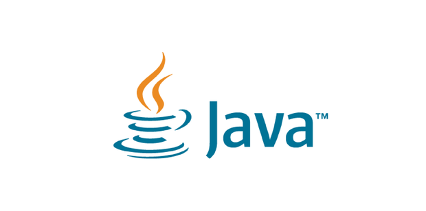
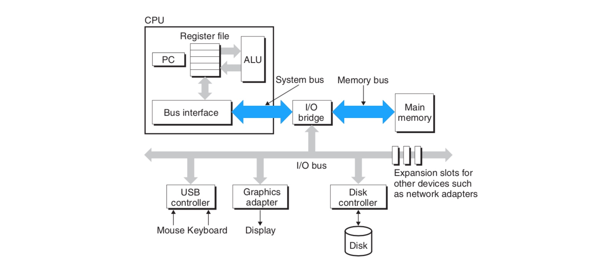

CAS 深入理解。
线程安全问题引发的思考
java中线程之间通信的线程安全问题，已经是老生常谈了，有这么几种解决方案：
- 使用synchronized关键字，但是我们知道这种简单粗暴，但是付出的代价是惨重的，会减低很多性能，其实也是称之为重量级锁。
- concurrent包中ReentrantLock，实现读写分离，有效的提高了并发，典型的例子：ConcurrentHashMap,就是使用ReentrantLock,加上分段锁的机制，保证了线程安全的前提下，提高了并发。相较于synchronized，更佳轻量
- concurrent包中Atomic类，实现原理，则是使用的CAS，实现的线程安全，本文将主要介绍CAS原理及实现机制。性能相对较高些。
CAS(compare and swap)比较交换
用当前内存地址上的值和预期的值比较，若相等，内存更新为新的值，若不相等，不更新。
java中实现：通过底层计算机的CAS原理，java层面，通过自旋当时方式实现，当前值和预期不一样的时候，采用自旋的方式，直到compare成功，set值，但是这种方式，会占用大量cpu时间，jvm也做了优化，在自旋时降低cpu使用率，在自旋的时候jvm会pause,减低cpu使用率。
在自学的过程中，发现，其实java代码，比较简洁，最底层是JNDI的方法，也是多方查找，总算找到了，更低层，实现CAS的原理，下面将详细介绍：
java中Atomic源码，以AtomicIntger的addAndGet为例
AtomicInteger包中的addAndGet1
2
3public final int addAndGet(int delta) {
return unsafe.getAndAddInt(this, valueOffset, delta) + delta;
}
Unsfe包中getAndAddInt1
2
3
4
5
6
7public final int getAndAddInt(Object var1, long var2, int var4) {
int var5;
do {
var5 = this.getIntVolatile(var1, var2);
} while(!this.compareAndSwapInt(var1, var2, var5, var5 + var4));
return var5;
}1
2public final native boolean compareAndSwapInt(Object var1, long var2,
int var4, int var5);
在代码中，能看到在java语言方面，是通过自旋的方式，一直循环，直到compareAndSwapInt为true为true的时候返回。 其实最重要是compareAndSwapInt这个方法，又干了些什么那，继续谈论。
其实再底层，就是物理机上做的原子操作，也就是硬件做的优化：
在多处理器环境下，LOCK#信号可以确保处理器独占使用某些共享内存。lock 可以被添加在下面的指令前：
ADD, ADC, AND, BTC, BTR, BTS, CMPXCHG, CMPXCH8B, CMPXCHG16B, DEC, INC, NEG, NOT, OR, SBB, SUB, XOR, XADD, and XCHG.
也就是所有的更新内存地址上数据的操作，通过在 inc 指令前添加 lock 前缀，即可让该指令具备原子性。多个核心同时执行同一条 inc 指令时，会以串行的方式进行，也就避免了上面所说的那种情况。那么这里还有一个问题，lock 前缀是怎样保证核心独占某片内存区域的呢？答案如下：
在 Intel 处理器中，有两种方式保证处理器的某个核心独占某片内存区域。第一种方式是通过锁定总线，让某个核心独占使用总线，但这样代价太大。总线被锁定后，其他核心就不能访问内存了，可能会导致其他核心短时内停止工作。第二种方式是锁定缓存，若某处内存数据被缓存在处理器缓存中。处理器发出的 LOCK# 信号不会锁定总线，而是锁定缓存行对应的内存区域。其他处理器在这片内存区域锁定期间，无法对这片内存区域进行相关操作。相对于锁定总线，锁定缓存的代价明显比较小。
总结下：物理机的cpu发出的指令，现在市面的cpu，根据操作的内存数据的情况，使用总线锁，或者缓存锁。如果是操作的数据是在内存的单行，会使用缓存锁，其他的cpu处理器，还是可以总线和内存交互，性能较高，但是操作的数据不在一个内存的数据较大，在内存地址上的多行，或者操作比较复杂，还是会使用总线锁，其他cpu处理器无法通过总线和内存交互，也就是会影响到其他的处理器的正常工作，性能较差。
再介绍下上面的总线，和物理机器结构，和cpu相关的工作流程。

总线：图总的system bus。cpu和内存传输的桥梁，多核cpu都是通过这一个总线和主内存交互。也是cpu和其他的硬件交互的通道，所以，总线锁，锁住总线，可以实现原子操作，并且因为总线锁，只能一个cpu处理器和内存交互，所以性能也是糟糕的。
参考文章：https://www.cnblogs.com/nullllun/p/9039049.html
CAS缺点
CAS虽然很高效的解决原子操作，但是CAS仍然存在三大问题。ABA问题，循环时间长开销大和只能保证一个共享变量的原子操作
ABA问题。因为CAS需要在操作值的时候检查下值有没有发生变化，如果没有发生变化则更新，但是如果一个值原来是A，变成了B，又变成了A，那么使用CAS进行检查时会发现它的值没有发生变化，但是实际上却变化了。ABA问题的解决思路就是使用版本号。在变量前面追加上版本号，每次变量更新的时候把版本号加一，那么A－B－A 就会变成1A-2B－3A。
从Java1.5开始JDK的atomic包里提供了一个类AtomicStampedReference来解决ABA问题。这个类的compareAndSet方法作用是首先检查当前引用是否等于预期引用，并且当前标志是否等于预期标志，如果全部相等，则以原子方式将该引用和该标志的值设置为给定的更新值。
关于ABA问题参考文档: http://blog.hesey.net/2011/09/resolve-aba-by-atomicstampedreference.html
循环时间长开销大。自旋CAS如果长时间不成功，会给CPU带来非常大的执行开销。如果JVM能支持处理器提供的pause指令那么效率会有一定的提升，pause指令有两个作用，第一它可以延迟流水线执行指令（de-pipeline）,使CPU不会消耗过多的执行资源，延迟的时间取决于具体实现的版本，在一些处理器上延迟时间是零。第二它可以避免在退出循环的时候因内存顺序冲突（memory order violation）而引起CPU流水线被清空（CPU pipeline flush），从而提高CPU的执行效率。
- 只能保证一个共享变量的原子操作。当对一个共享变量执行操作时，我们可以使用循环CAS的方式来保证原子操作，但是对多个共享变量操作时，循环CAS就无法保证操作的原子性，这个时候就可以用锁，或者有一个取巧的办法，就是把多个共享变量合并成一个共享变量来操作。比如有两个共享变量i＝2,j=a，合并一下ij=2a，然后用CAS来操作ij。从Java1.5开始JDK提供了AtomicReference类来保证引用对象之间的原子性，你可以把多个变量放在一个对象里来进行CAS操作。